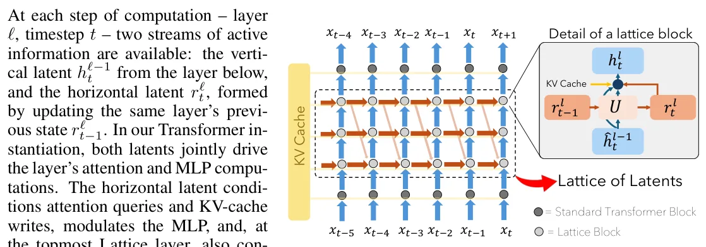
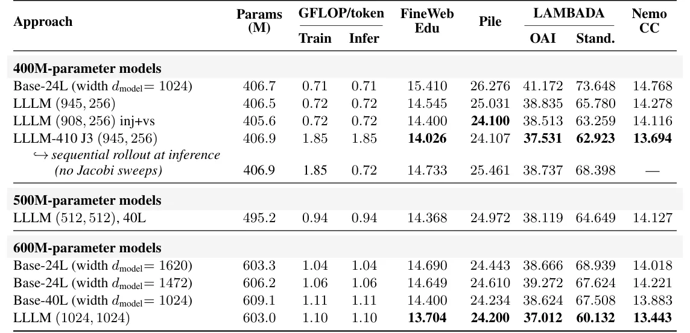
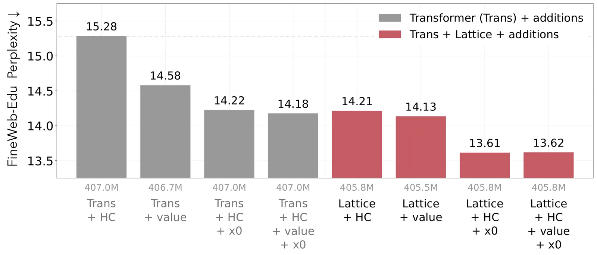

Introdução
Os modelos de linguagem atuais (LLMs) evoluíram principalmente através de três eixos: aumentar a profundidade da rede, adicionar etapas de raciocínio latente (como Chain-of-Thought implícito) ou enriquecer as conexões residuais para melhorar o fluxo de informação. Em uma arquitetura Transformer padrão, cada token é processado por uma pilha de camadas ao longo de um único "fluxo residual" vertical. Esse fluxo único desempenha múltiplas funções simultaneamente: lê da memória via atenção, escreve na memória (KV-cache), atualiza-se via MLP e, no final, é decodificado. Trabalhos recentes tentam extrair mais desse fluxo, tornando-o mais rico ou profundo, mas raramente alteram a capacidade computacional ativa mantida pelo modelo entre tokens, exceto através da memória de sequência (KV-cache) que cresce linearmente com o contexto.
Este paper propõe um eixo complementar: aumentar a capacidade computacional através de estados latentes persistentes por camada. Os autores, do MIT CSAIL e Adobe, introduzem o "Lattice of Latents" (Lattice de Latentes). A ideia central é simples em conceito, mas distinta em implementação: além do fluxo vertical tradicional ($h^l_t$), cada camada $l$ mantém um estado horizontal ($r^l_t$) que evolui recorrentemente ao longo do tempo (entre tokens). Esses estados horizontais não substituem a memória de sequência; eles atuam como "estados companheiros" que condicionam a computação vertical, oferecendo uma forma diferente de escalar a capacidade do modelo sem aumentar proporcionalmente o tamanho do contexto ou a profundidade da rede.

Mecanismo do Lattice
Para entender a inovação, é crucial distinguir o Lattice de outras arquiteturas híbridas, como Transformers-SSM (State Space Models). Em SSMs, os estados recorrentes servem principalmente como memória interna para misturar sequências, muitas vezes substituindo ou reduzindo a necessidade de atenção global. No Lattice, os latentes horizontais não substituem a atenção; eles a complementam. Especificamente, o estado horizontal $r^l_t$ condiciona as queries de atenção, as escritas no KV-cache, a computação do MLP e, na camada superior, a decodificação final. Isso significa que o modelo mantém uma "memória de estado" leve e persistente por camada, que informa como processar o token atual, enquanto o KV-cache continua a armazenar o contexto histórico explícito.
O mecanismo de atualização horizontal é projetado para ser expressivo, mas compatível com treinamento paralelo por tokens. Os autores utilizam uma atualização afim inspirada no Mamba, onde $r^l_t$ é atualizado a partir de $r^l_{t-1}$ usando parâmetros aprendidos. Essa estrutura permite que o modelo aprenda a manter informações relevantes ao longo da sequência sem a sobrecarga computacional de operações sequenciais complexas durante o treinamento. O estado horizontal age como um modulador: ele ajusta dinamicamente como o fluxo vertical processa a informação, permitindo que o modelo "lembre" de padrões estruturais ou contextuais de longo alcance que o fluxo residual vertical puro pode perder ou diluir em camadas profundas.
Resultados em Transformers
Os autores avaliam o LLLM (Latent Lattice Language Model) em Transformers e em backbones recorrentes modernos, como Gated DeltaNet (GDN), Mamba-2 e híbridos GDN-Mamba-2. O treinamento foi realizado no conjunto FineWeb-Edu, com pré-treinamento de até 30 bilhões de tokens. Para a avaliação principal, focamos nos resultados após 20 bilhões de tokens, comparando modelos de 400M e 600M parâmetros.
No grupo de 400M parâmetros, o Transformer base (Base-24L, largura $d_{model}=1024$) atinge uma perplexidade de 15.41 no FineWeb-Edu. O LLLM correspondente (LLLM 945,256), que mantém aproximadamente o mesmo número de parâmetros (406.5M vs 406.7M) e custo computacional (0.72 GFLOP/token vs 0.71 GFLOP/token), reduz a perplexidade para 14.54. Isso representa uma melhoria de 5.6% em um único passo, um ganho significativo em escala de linguagem. Ao adicionar injeção de entrada e um fluxo de leitura vertical (input-injection + vstream), a perplexidade cai ainda mais para 14.40, superando o Transformer base em todos os conjuntos de dados out-of-distribution (Pile, LAMBADA, Nemotron-CC) com margens de 3% a 11%.
Um ponto interessante é a comparação com modelos maiores. O LLLM de 400M com injeção de entrada e vstream (405.6M parâmetros) atinge uma perplexidade de 14.40 no FineWeb-Edu, desempenho comparável ao Transformer Base-40L de 609M parâmetros (também 14.40), mas com 33% menos parâmetros e 35% menos computação forward estimada. Isso sugere que distribuir a capacidade entre fluxos verticais e horizontais é mais eficiente do que simplesmente aumentar a largura ou a profundidade do fluxo residual.

Refinamento e Comparação
Os autores também exploram o refinamento Jacobi (Jacobi refinement), uma técnica onde o modelo executa múltiplas "varreduras" (sweeps) sobre o mesmo token durante a inferência para refinar o estado latente. Com três varreduras fixas (LLLM-410 J3), o modelo de 400M atinge uma perplexidade de 14.03 no FineWeb-Edu, o melhor resultado do grupo. No entanto, isso eleva o custo computacional para 1.85 GFLOP/token. Quando avaliado sequencialmente (sem varreduras), o custo volta a 0.72 GFLOP/token, mas a perplexidade sobe para 14.73. Isso indica que o refinamento traz ganhos, mas a versão "rápida" do Lattice já é competitiva com modelos maiores sem overhead de inferência.
No grupo de 600M parâmetros, o LLLM (1024,1024) atinge 13.70 de perplexidade no FineWeb-Edu, superando tanto Transformers com largura aumentada quanto o Base-40L de 609M parâmetros (14.40), apesar de terem custos computacionais similares (1.10 GFLOP/token). Esses resultados reforçam a tese central: alocar capacidade para latentes horizontais persistentes é uma estratégia de escalonamento complementar e eficaz, que funciona melhor do que gastar a mesma capacidade apenas em largura ou profundidade do fluxo residual.

Aplicação em Backbones Recorrentes
A versatilidade do Lattice é demonstrada ao aplicá-lo a backbones recorrentes. Em Gated DeltaNet (GDN) e Mamba-2, os latentes horizontais condicionam as operações nativas de memória (leitura, escrita e atualização). Após 10 bilhões de tokens, o Lattice melhora a perplexidade em todos os tamanhos de estado nativo testados. Mais impressionante, as variantes Lattice-GDN e Lattice-Triadic-GDN superam as bases puras que possuem 4x mais entradas de estado nativo. Isso sugere que o Lattice ajuda o modelo a usar sua memória interna de forma mais concentrada e alinhada, como evidenciado por análises de probing que mostram espectros de estado mais concentrados e maior alinhamento de queries com a direção principal da memória.
Além da perplexidade de linguagem, os ganhos se estendem a tarefas downstream. No grupo de 400M, o LLLM (945,256) melhora a média de acurácia em nove tarefas de zero-shot de 45.46 para 47.67 (+2.21 pontos) e em five-shot de 46.19 para 47.79 (+1.60 pontos). O refinamento Jacobi leva a média five-shot para 49.38. Esses resultados indicam que a melhoria não é apenas em prever o próximo token, mas em capturar estruturas de linguagem mais úteis para raciocínio e tarefas específicas.
Limitações e Conclusão
Apesar dos resultados promissores, o paper deixa algumas questões em aberto. A eficiência computacional do refinamento Jacobi é limitada durante a inferência sequencial, onde os ganhos diminuem. Além disso, o treinamento com um número aleatório de iterações Jacobi (como em PonderLM-2) poderia potencialmente fechar a lacuna entre a inferência rápida e a refinada, mas isso não foi explorado em profundidade neste trabalho. Outro aspecto é a escolha da arquitetura de atualização horizontal: os autores usam uma atualização afim simples, mas não exploram extensivamente mecanismos de atenção ou não-linearidades mais complexas para o fluxo horizontal.
O paper identifica o estado persistente por camada como um eixo promissor para o escalonamento de LLMs. Ao contrário de tentar fazer o fluxo residual vertical carregar todo o peso computacional, o Lattice distribui essa carga, usando estados horizontais leves para manter informação contextual e estrutural. Isso permite que modelos menores atinjam desempenho comparável a modelos maiores, ou que modelos do mesmo tamanho aprendam representações mais ricas. A abordagem é especialmente relevante para cenários onde o custo de memória de sequência (KV-cache) é um gargalo, pois o Lattice adiciona capacidade sem aumentar o tamanho do contexto, apenas mantendo um estado leve por camada que é atualizado a cada passo.
Em resumo, o Latent Lattice Language Model propõe uma mudança de perspectiva: em vez de apenas tornar o fluxo residual mais profundo ou rico, mantenha estados latentes horizontais que evoluem no tempo. Esses estados condicionam a atenção e a computação da camada, atuando como uma memória de estado persistente e leve. Os resultados mostram que essa estratégia é eficaz em Transformers e modelos recorrentes, oferecendo ganhos de perplexidade e desempenho downstream sem o custo linear de expansão do contexto. Para desenvolvedores e pesquisadores, o Lattice sugere que o futuro do escalonamento de LLMs pode passar não apenas por redes maiores, mas por arquiteturas que melhoram a qualidade e a persistência dos estados internos entre tokens.
O que fica
- O Lattice of Latents adiciona um estado horizontal persistente por camada, complementando o fluxo residual vertical padrão dos Transformers.
- Modelos LLLM de 400M parâmetros superam Transformers base de mesmo tamanho, reduzindo a perplexidade de 15.41 para 14.40 no FineWeb-Edu.
- A abordagem é agnóstica à arquitetura: funciona em Transformers, Mamba-2 e GDN, muitas vezes superando bases com 4x mais memória nativa.
- O método compõe-se com melhorias existentes no fluxo residual, como hyper-connections, atingindo os melhores resultados combinados.
Paper original: Latent Lattice Language Models
Comentários
Nenhum comentário ainda. Seja o primeiro.